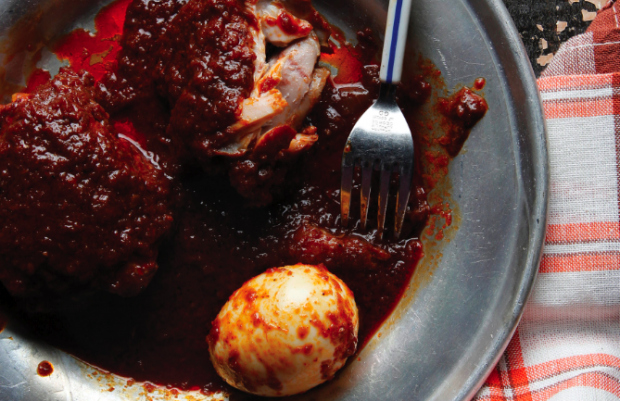

Doro Wat

Doro wat is a traditional Ethiopian chicken stew flavored with a spiced butter called niter kibbeh and berbere
Ingredients
- 1/4 cup lemon juice
- 2 tablespoons salt, plus more as needed
- 4 bone-in chicken thighs
- 3 cups chopped onions
- 3 garlic cloves, minced
- 1 tablespoon peeled, minced fresh ginger (1/2-inch piece)
- water (optional)
- 1/4 cup butter
- 2 tablespoons paprika
- 1 cup berbere paste
- 3/4 cup chicken stock
- 1/4 cup red wine
- 1 teaspoon cayenne pepper, or to taste
- freshly ground black pepper
- 4 hard-boiled eggs, peeled
- injera bread or hot cooked rice, to serve
Steps
- Combine the lemon juice and salt in a large, nonreactive mixing bowl and stir until slightly dissolved. Add the chicken thighs, one at a time, dipping both sides of each piece in the marinade to coat. Cover and allow to marinate in the refrigerator for about 30 minutes.
- While the chicken is marinating, purée the onions, garlic and ginger in a food processor or blender. Add a little water, if necessary, to get the blades moving.
- Heat the butter in a Dutch oven over medium heat and stir in the paprika to color the oil. Stir in the berbere paste and cook for 3 minutes, until heated through. Add the onion mixture and sauté until most of the moisture evaporates and the mixture reduces, about 15 minutes.
- Pour in the stock and wine, add cayenne to taste and season with salt and pepper. Remove the chicken from the lemon juice and discard the marinade. Add the chicken to the pot and cover with sauce. Bring the sauce to a boil, reduce the heat to low, cover and simmer for 45 minutes, flipping the chicken halfway through. Add water, if necessary, to maintain the liquid level.
- Add the whole hard-boiled eggs and continue to cook until the chicken is very tender, 10 to 15 minutes. Adjust seasoning and serve hot with injera bread or rice.